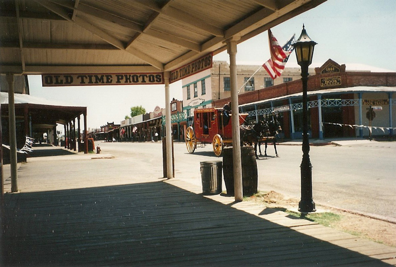
.
Tombstone was founded in 1879 by prospector Ed Schieffelin in what was then Pima County, Arizona Territory. It became one of the last boomtowns in the American frontier. The town grew significantly in the mid-1880s as the local mines produced $40 to $85 million in silver bullion, the largest productive silver district in Arizona. Its population grew from 100 to around 14,000 in less than seven years. It is best known as the site of the 'Gunfight at the O.K.Corral' and presently draws much of its revenue from tourism.
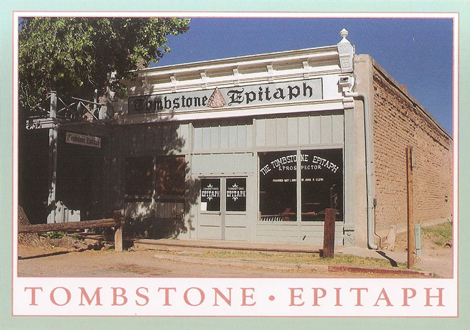
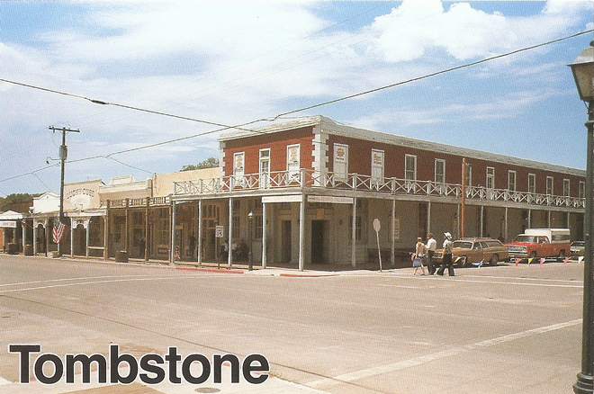
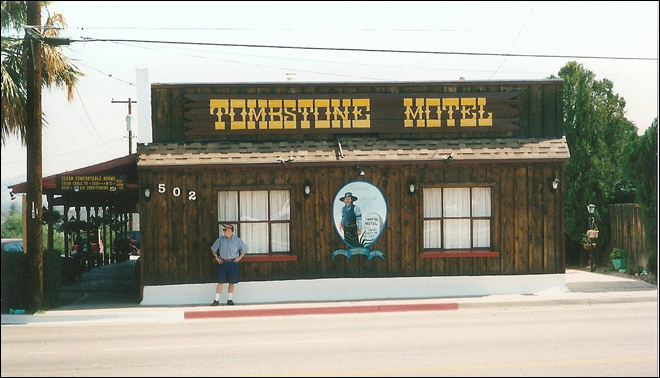
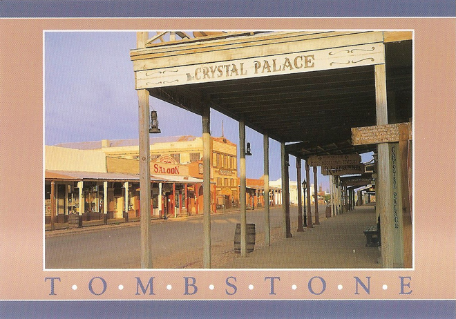
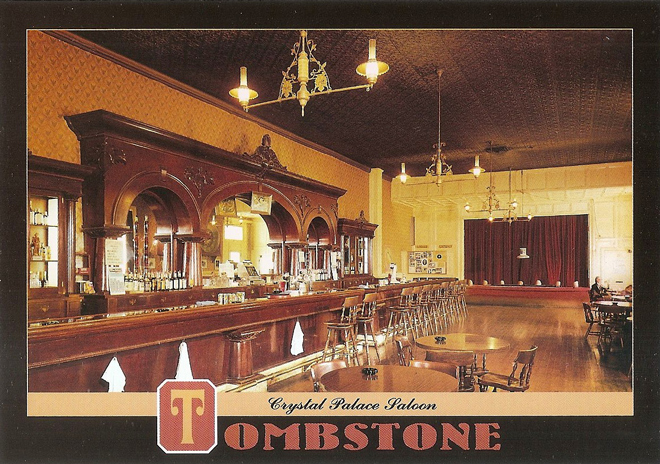
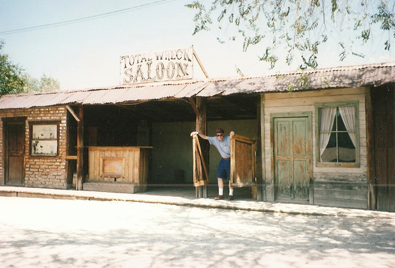
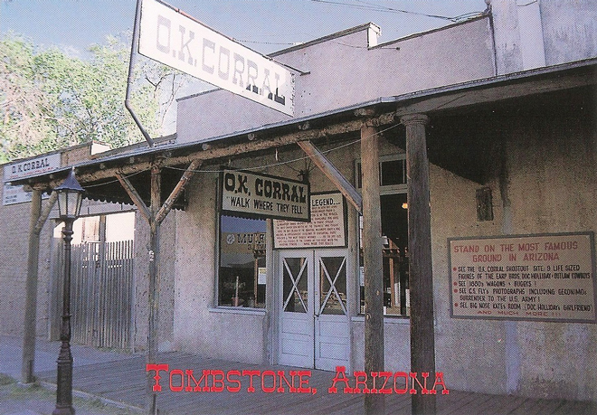
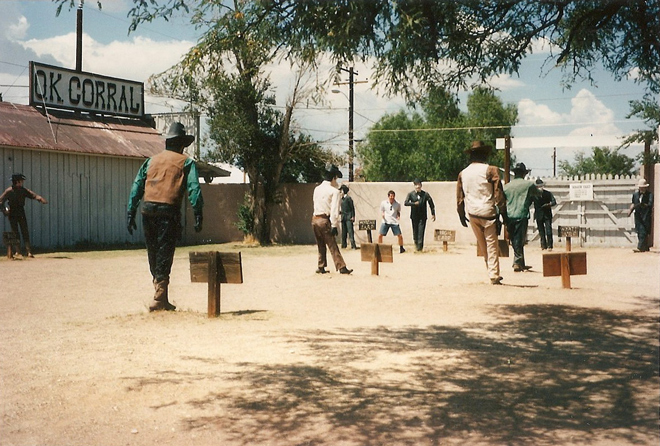
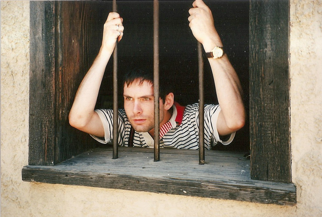
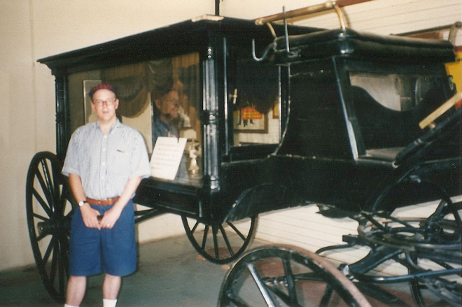
Tom McLaury, Frank McLaury and Billy Clanton, killed in the O.K.Corral shootout, are among those buried in the town's Boothill Graveyard. Of the number of pioneer Boot Hill cemeteries in the Old West, so named because most of those buried in them had "died with their boots on", Boothill in Tombstone is one of the best-known.
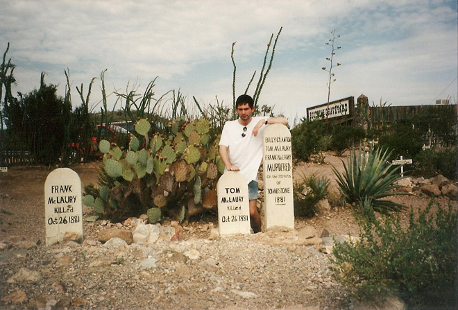
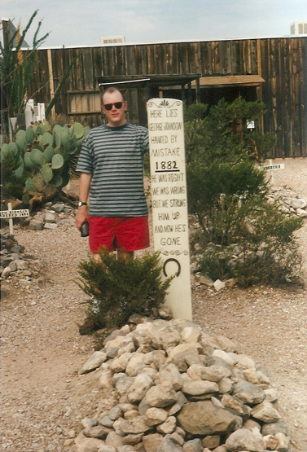
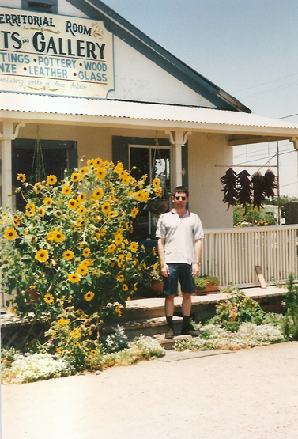
We spotted this eccentric store just outside Tombstone ...
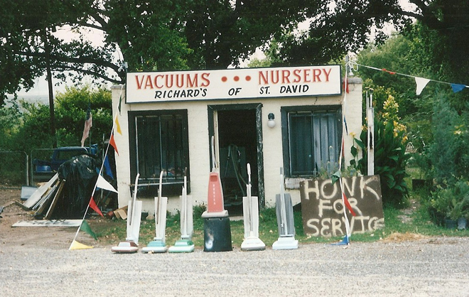
The town of Nogales straddles the border between the USA and Mexico. We were able to take our car over to the Mexican side but it was a fairly scabby town and there was (even in 1995) very strict security to get back into the USA: border patrol staff searched our car boot and looked under the vehicle with mirrors to check we weren't carrying stowaways.
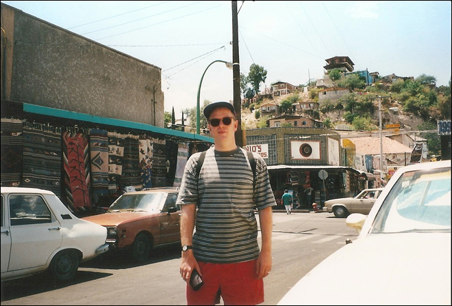
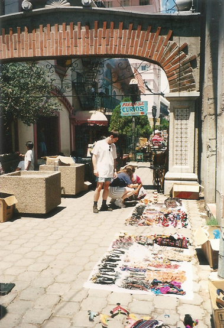
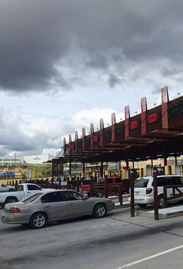